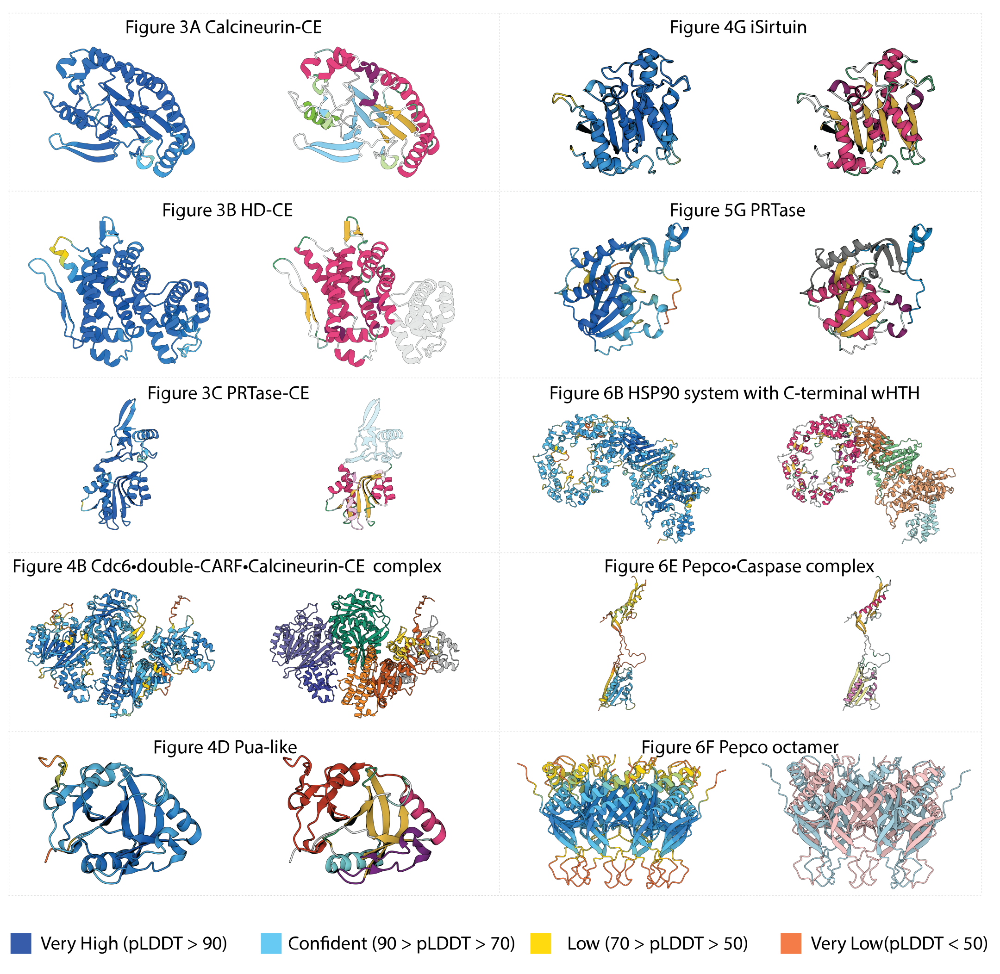

Supplementary Figure 8. AlphaFold confidence score for the
models produced on the present work. On the left the structural
models colored by the pLDDT scores. On the right the structural models
as colored in the figures presented on the main text. Dark blue, light
blue, yellow and orange represent a very high, confident, low and very
low prediction respectively.